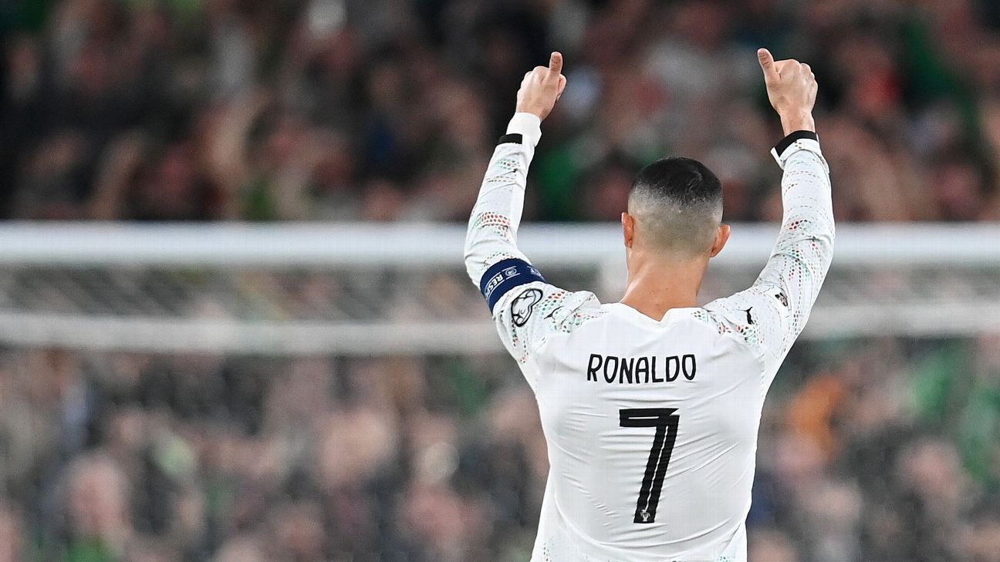

20-Year World Cup Knockout Goal Drought
The embarrassing record: Before he finally broke his duck at the 2026 World Cup, Ronaldo's knockout-stage numbers were football's most awkward stat — as of 2022, 8 knockout matches, 0 goals, 0 assists. Across five straight World Cups he shone occasionally in the groups only to go entirely missing once the knockouts began, a glaring mismatch with his 'big-game man' persona.
The Klose contrast: The figure that throws this drought into starkest relief is German striker Miroslve Klose. Klose banged in 16 goals across four World Cups, repeatedly delivering in the knockouts, and lifted the trophy. Ronaldo scored just 8 across five editions and managed nothing in the knockouts — the contrast is so stark it renders the 'GOAT' narrative remarkably thin.
Vanishing acts: From going missing in the 2006 semi-final against France, to firing blanks against Uruguay in 2018, to being dropped to the bench in the 2022 knockouts — Ronaldo repeatedly was nowhere to be found on football's biggest stage. Several Portuguese knockout exits were directly attributable to the marquee star failing to step up, a deficiency at the key moments that hurts to recall.
Marketing mismatch: This stands in stark contrast to the global marketing of the CR7 brand, which cast him as the 'born for the national team' saviour. Yet the knockout-stage evidence of 0 goals and 0 assists landed like a slap. As the gap between promotion and reality widens, the doubts swell louder, and the 'big-game bottler' tag sticks hard.
Group-stage padding: Critics point out that Ronaldo's World Cup goals mostly came against weak sides in the group stage, with limited-value strikes hyped on repeat. Once it came to knockout football — top defences, real pressure — he could not reproduce his club efficiency, and his big-game metal has long been questioned.
The Messi yardstick: On the same stage Messi's World Cup numbers are far more dazzling — multiple knockout goals and assists, and the 2022 title to seal his GOAT case. The gulf between the two in World Cup knockouts has long been a core exhibit in the Messi-Ronaldo debate. Unmatched at bullying weaker sides in the groups; a totally different player in World Cup knockouts — Ronaldo's enduring weakness.
Record correction: To be fair, at the 2026 World Cup a 41-year-old Ronaldo finally scored in a knockout, ending the 20-year drought. But objectively that goal came at the very tail of his career, and cannot fully wipe away the prior history of 0 goals and 0 assists in 8 knockout matches; the dark ledger still has its page.